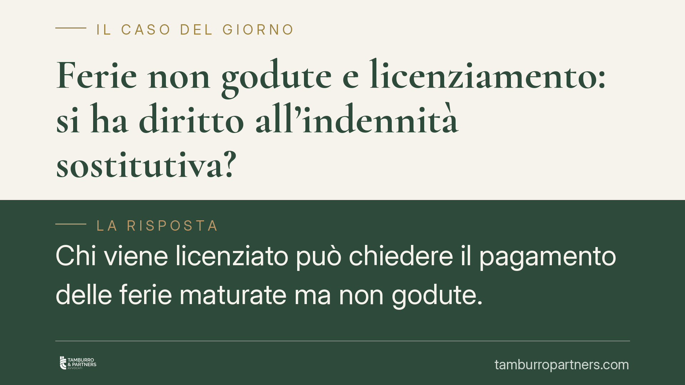

Ferie non godute e licenziamento: si ha diritto all'indennità sostitutiva?
Chi viene licenziato può chiedere il pagamento delle ferie maturate ma non godute. La regola generale è di tutela del lavoratore, ma il quadro cambia tra settore privato e pubblico impiego, dove vige un divieto di monetizzazione. La causale del recesso e gli obblighi del datore incidono sull'esito. Ecco cosa dice davvero la normativa.

Il principio di fondo
Le ferie sono un diritto irrinunciabile del lavoratore. Lo afferma l'art. 36 della Costituzione, ripreso a livello europeo dall'art. 7 della Direttiva 2003/88/CE e dall'art. 31 della Carta dei diritti fondamentali dell'Unione europea (Carta di Nizza).
Se al momento della cessazione del rapporto restano ferie maturate e non godute, la regola generale è che il lavoratore ha diritto a un'indennità sostitutiva. Questo vale a prescindere dalla causale del recesso: licenziamento per giustificato motivo oggettivo, dimissioni, scadenza del contratto a termine.
Cosa dice la giurisprudenza europea
Su questo punto occorre precisione, perché è facile fraintendere l'orientamento della Corte di giustizia UE.
Con le sentenze Max-Planck (C-684/16) e Kreuziger (C-619/16), la CGUE ha chiarito che il diritto all'indennità per ferie non godute non si perde automaticamente solo perché il lavoratore non le ha richieste. L'indennità può essere negata solo se il datore di lavoro dimostra di aver messo il dipendente in condizione effettiva di fruire delle ferie, informandolo in modo adeguato e tempestivo.
È un orientamento di tutela del lavoratore. La semplice "colpa" o inerzia del dipendente non basta a far decadere il diritto: l'onere probatorio grava sul datore.
Il nodo del pubblico impiego
Nel lavoro pubblico la disciplina è più restrittiva. L'art. 5, comma 8, del D.L. 95/2012 (convertito nella L. 135/2012) ha introdotto il divieto di monetizzazione delle ferie non godute per i dipendenti delle pubbliche amministrazioni. La ratio è di contenimento della spesa pubblica.
La Corte costituzionale, con la sentenza n. 95/2016, ha ritenuto legittimo tale divieto, ma con una lettura importante: esso opera quando la mancata fruizione dipende da una scelta organizzativa o dalla volontà del dipendente. Non può invece applicarsi quando la fruizione è stata impossibile per cause non imputabili al lavoratore (ad esempio cessazione improvvisa del rapporto o malattia). In quest'ultimo caso, l'indennità resta dovuta, in coerenza con il diritto euro-unitario.
Il tema delle recenti pronunce amministrative
Si segnala un dibattito in corso sulla possibilità di negare l'indennità nei casi di cessazione del rapporto per gravi illeciti disciplinari. Alcune pronunce del giudice amministrativo si sarebbero orientate in senso restrittivo.
> Nota di verifica. Una pronuncia del Consiglio di Stato indicata come n. 2909/2026 circola come riferimento su questo tema. Non siamo in grado di confermarne l'esistenza, il numero e la sezione: prima di fondarvi qualsiasi decisione, l'estremo va verificato sulle banche dati ufficiali. Va inoltre segnalato che una lettura puramente sanzionatoria del divieto di indennità rischia di porsi in tensione con i principi CGUE sopra richiamati, che restano di tutela del lavoratore.
Quanto alla contrapposizione tra un orientamento "garantista" della Cassazione e uno più rigoroso del giudice amministrativo, si tratta di una semplificazione che va maneggiata con cautela: senza riferimenti puntuali di legittimità a sostegno, è più corretto parlare di quadro in evoluzione, differenziato tra settore privato e pubblico impiego.
Implicazioni pratiche
Per il lavoratore privato: al termine del rapporto le ferie residue sono, di regola, monetizzabili. La decadenza è ipotesi eccezionale e richiede prova a carico del datore.
Per il dipendente pubblico: opera il divieto di monetizzazione, ma con eccezioni quando la mancata fruizione non è a lui imputabile. La causale della cessazione (organizzativa, disciplinare, per impossibilità sopravvenuta) diventa la chiave di lettura.
Cosa fare in concreto
- Ricostruisci il monte ferie residuo con le buste paga e i prospetti presenze fino all'ultimo giorno di rapporto.
- Verifica la causale della cessazione: distingui tra recesso per motivi oggettivi/scadenza e cessazione disciplinare, perché incide sull'esito.
- Nel pubblico impiego, documenta l'eventuale impossibilità di fruire le ferie per cause non a te imputabili.
- Conserva ogni comunicazione del datore su solleciti o inviti a godere le ferie: la loro assenza rafforza la posizione del lavoratore.
- Fai controllare i termini di prescrizione del credito prima di formulare qualsiasi richiesta.
---
*Contributo informativo a cura di Tamburro & Partners - Avv. Giuseppe Tamburro. Non costituisce parere legale.*
Ogni storia di lavoro ha i suoi tempi.
Se gestisci HR e vuoi un confronto su contenzioso, ispezioni o licenziamenti, scrivi allo studio. Ti rispondiamo entro un giorno lavorativo.